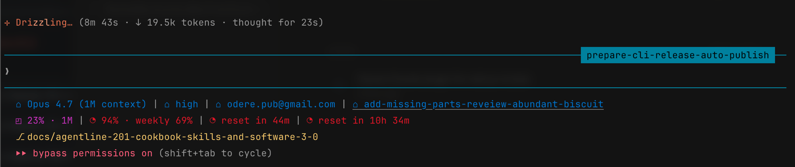

git
Branch, SHA, worktree, change counts, untracked, conflicts, ahead/behind, upstream, origin repo, and pull-request status.
Statusline for Claude Code · built for Software 3.0
Fast, themeable, and offline. agentline reads the stdin payload Claude Code sends, renders git, tokens, context window, rate limits, and session info across 28 configurable widgets, and exits. No network on the render path. No native modules. No plugin scaffolding.

Why agentline
28 widgets across 5 families, each covering one slice of session status — composed into up to three statusline rows, then styled by a theme engine that degrades gracefully on any terminal.
Branch, SHA, worktree, change counts, untracked, conflicts, ahead/behind, upstream, origin repo, and pull-request status.
Input and output token counts, cached tokens, and throughput.
Context-window length, percentage used, and a live fill bar.
Session and weekly quota usage with countdown reset timers.
Model, version, thinking effort, plan link, project, session id, and account — straight from the stdin payload.
Arrayed chevrons and caps, plus a theme engine that degrades from truecolor to 256-colour to 16-colour terminals.
agentline edit opens a live-preview editor with a
searchable, family-grouped widget picker.
Install adds five agentline skills, so you can configure, theme, and troubleshoot it by asking the agent — without leaving Claude Code.
Uninstall restores your previous statusline byte-for-byte. The render hot path makes zero network calls.
Software 3.0 · agentic engineering
In Andrej Karpathy's framing, Software 3.0 is the era where an LLM is the runtime and natural language is the program — so the interesting design surface is the set of interfaces an agent can drive. agentline has no language model on its render path. It earns the label a different way: every interface is shaped so an agent can install, configure, theme, and troubleshoot it on its own.
The renderer reads a versioned, bounded JSON envelope on stdin and writes ANSI bytes on stdout. One adapter absorbs host drift; the agent's mental model of "what comes in" stays valid.
A deliberately flat verb table — render,
edit, doctor, reset,
uninstall, config — every verb reachable
from a single --help view.
The whole layout is editable via
agentline config widget (add, remove, move, replace,
set-option). Every mutation is pure, schema-validated, and written
atomically — a broken config is rejected before it reaches disk.
Install copies five skill files into Claude Code. Each file's description is its dispatch contract, so the host routes natural-language requests to the right runbook — the docs are the agent's import path.
Per-directory CLAUDE.md briefings plus an
authoritative glossary keep vocabulary stable release over
release. Gates enforce parity, so prompts that cite a term keep
working.
Worked example. You ask Claude Code: "switch agentline to a high-contrast theme."
agentline config widget list --json.
agentline doctor confirms the wiring is intact.No new endpoint, no agent framework, no eval harness — five small steps, each backed by an explicit contract. Read the full thesis →
The catalogue
Pick a family to filter, or browse the whole set. Widgets accumulating tokens or quota declare an explicit reset axis — session, block, day, week, model, or effort — so totals never mix boundaries.
model
Active model id (e.g. Sonnet 4.6).
version
Claude Code version.
thinking-effort
Thinking-effort tier: low, medium, or high.
plan
Active plan for the current session.
project
Project name — git repo or working-directory folder.
session-id
Short session id.
account-email
Logged-in account email.
tokens
Input + output token subtotals for the chosen reset axis.
tokens-cached
Cached-token subtotal (prompt-cache hits).
token-speed
Input + output tokens per second over the active window.
context-length
Tokens currently in the context window.
context-percentage
Percentage of the model's context window used.
context-bar
Tiny inline bar approximating context fill.
session-weekly-usage
Live session + weekly usage % from Claude Code's /usage.
current-session-reset-timer
Time remaining until the current session resets.
current-session-reset-at
Wall-clock time of the next session reset.
week-limit-timer
Time remaining until the weekly limit resets.
weekly-reset-at
Day + time of the next weekly reset.
git-branch
Current branch, or short SHA when detached.
git-sha
Short commit SHA of HEAD.
git-worktree
Basename of the current worktree.
git-changes
Staged, unstaged, and untracked file counts.
git-untracked
Untracked-file count.
git-conflicts
Merge-conflict file count.
git-ahead-behind
Commits ahead of and behind upstream.
git-upstream
Upstream branch, e.g. origin/main.
git-origin-repo
Repo segment of the origin remote URL.
git-pr
PR for HEAD's branch (opt-in network).
Themes & rendering
Colour is semantic, not decorative: every widget resolves its colour from a named role, so a theme is a small JSON file you can swap or author yourself.
Optional chevrons and caps stitch adjacent segments together, with colour transitions computed between neighbours.
The engine degrades automatically: truecolor → 256-colour → 16-colour → none, matching whatever the terminal advertises.
--no-color for plain text, --no-unicode or
--ascii to swap glyphs for ASCII. NO_COLOR
is honoured too.
claude-code-dark ships in the box; drop your own
theme JSON into your agentline config directory and reference it by
name.
Get started
Requires Node.js 20 LTS or newer, and Claude Code run at least once.
# 1. install the CLI
npm install -g @odere-pro/agentline
# 2. wire into Claude Code (statusLine + skills + themes)
agentline install
# 3. verify the wiring (add --fix to self-repair)
agentline doctor
# 4. customise widgets, theme, and layout (TUI)
agentline edit
Your settings are safe. agentline install
backs up your existing statusLine before wiring its own.
Run agentline uninstall any time to restore it
byte-for-byte and remove the installed skills.
Uninstall
# restore the previous statusLine, remove installed skills
agentline uninstall
# also wipe agentline config and any custom themes
agentline uninstall --purgeQuestions
agentline edit for the live TUI editor, or ask the
agent in any Claude Code session to add a widget or swap the theme.
The scriptable agentline config widget subcommands
(add, remove, move,
replace, set-option) cover the same ground
from the shell.
git, tokens, and
context families cover branch, SHA, worktree, change
counts, upstream, pull-request status, input and output token
counts, throughput, context-window usage, and a fill bar — 28
widgets across 5 families in total.
agentline uninstall to restore your previous
statusLine byte-for-byte and remove the installed
skills. Add agentline uninstall --purge to also wipe
your agentline config and custom themes. Install takes a backup
first, so the round-trip leaves no trace.
--no-color for plain text,
--no-unicode or --ascii to replace
separators and glyphs with ASCII, and the theme engine auto-degrades
from truecolor to 256-colour to 16-colour terminals.
NO_COLOR is honoured as well.